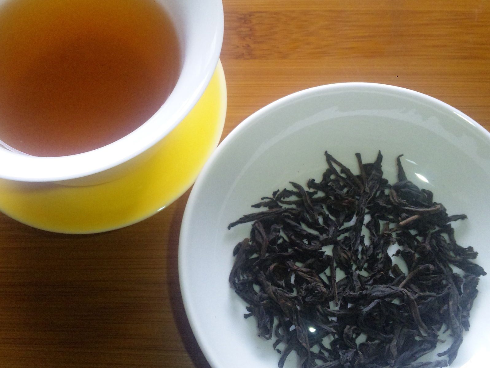
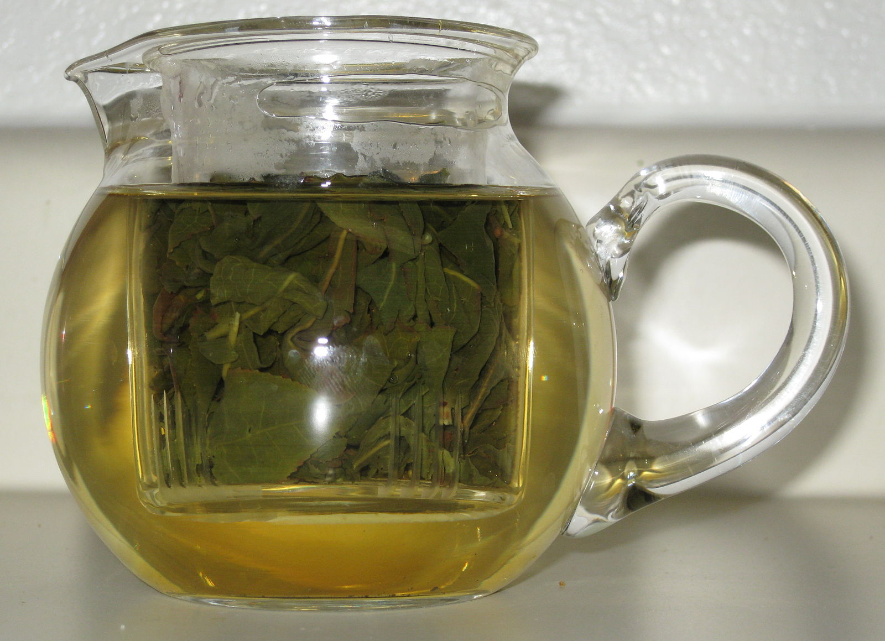

Oolong Tea
Oolong is a traditional Chinese tea (Camellia sinensis) produced through a process including withering the plant under strong sun and oxidation before curling and twisting. Most oolong teas, especially those of fine quality, involve unique tea plant cultivars that are exclusively used for particular varieties. The degree of oxidation can range from 8–85%, depending on the variety and production style. Oolong is especially popular in south China and Chinese expatriates in Southeast Asia, as is the Fujian preparation process known as the Gongfu tea ceremony.
Different styles of oolong tea can vary widely in flavor. They can be sweet and fruity with honey aromas, or woody and thick with roasted aromas, or green and fresh with complex aromas, all depending on the horticulture and style of production. Several types of oolong tea, including those produced in the Wuyi Mountains of northern Fujian, such as Da Hong Pao, are among the most famous Chinese teas. Different varieties of oolong are processed differently, but the leaves are usually formed into one of two distinct styles. Some are rolled into long curly leaves, while others are 'wrap-curled' into small beads, each with a tail. The former style is the more traditional.
The name oolong tea came into the English language from the Chinese name (simplified Chinese: 乌龙茶; traditional Chinese: 烏龍茶; pinyin: wūlóng chá), meaning "black dragon tea". In Chinese, oolong teas are also known as qingcha (Chinese: 青茶; pinyin: qīngchá) or "dark green teas".
The manufacture of oolong tea involves repeating stages to achieve the desired amount of bruising and browning of leaves. Withering, rolling, shaping, and firing are similar to black tea, but much more attention to timing and temperature is necessary.
Preparation
Generally, 3 grams of tea per 200 ml of water, or about two teaspoons of oolong tea per cup, should be used. Oolong teas should be prepared with 200 to 205 °F (93 to 96 °C) water (not boiling) and steeped 3–10 minutes. High quality oolong can be steeped several times from the same leaves and improves with rebrewing: it is common to steep the same leaves three to five times, the third or fourth steeping usually being considered the best.
A widely used ceremonial method of steeping oolongs in Taiwan and China is called gongfucha. This method uses a small steeping vessel, such as a gaiwan or Yixing clay teapot, with more tea than usual for the amount of water used. Multiple short steeps of 20 seconds to 1 minute are performed; the tea is often served in one- to two-ounce tasting cups.